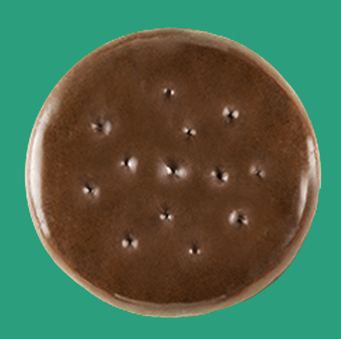
Imagine
Give the cookie a personality and invent a scenario
Stop-Motion Video
What if every cookie had a personality? I created a playful video concept where each cookie became a character. Then turned those characters into puppets for a stop-motion story imagined and built by a local girls scout troop.
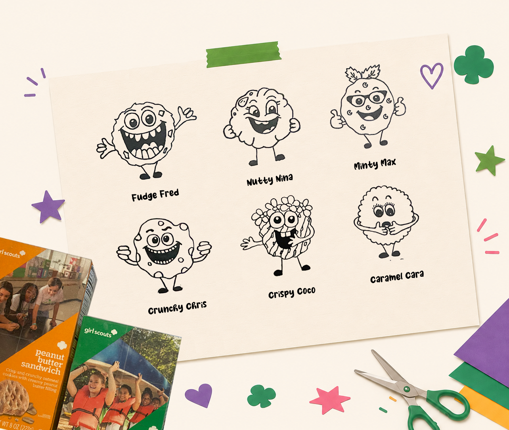
THE PROJECT
The idea was to make the cookie season feel like a story. Instead of simply presenting the cookies, every variety became a character with its own personality, look and role in the story.

Give the cookie a personality and invent a scenario
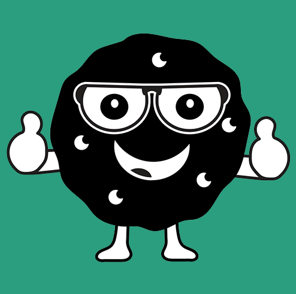
Cut, combine and build the character pieces into a puppet.
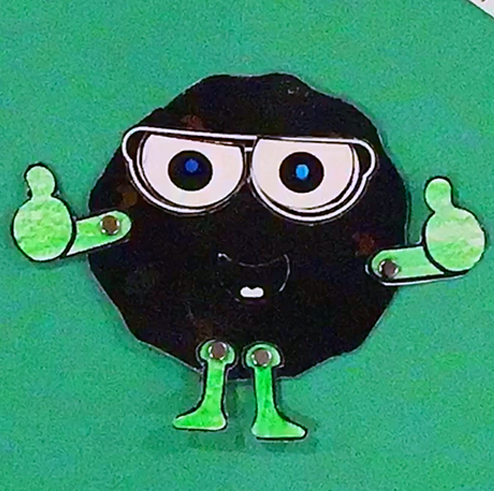
Move the characters frame by frame to create the story.
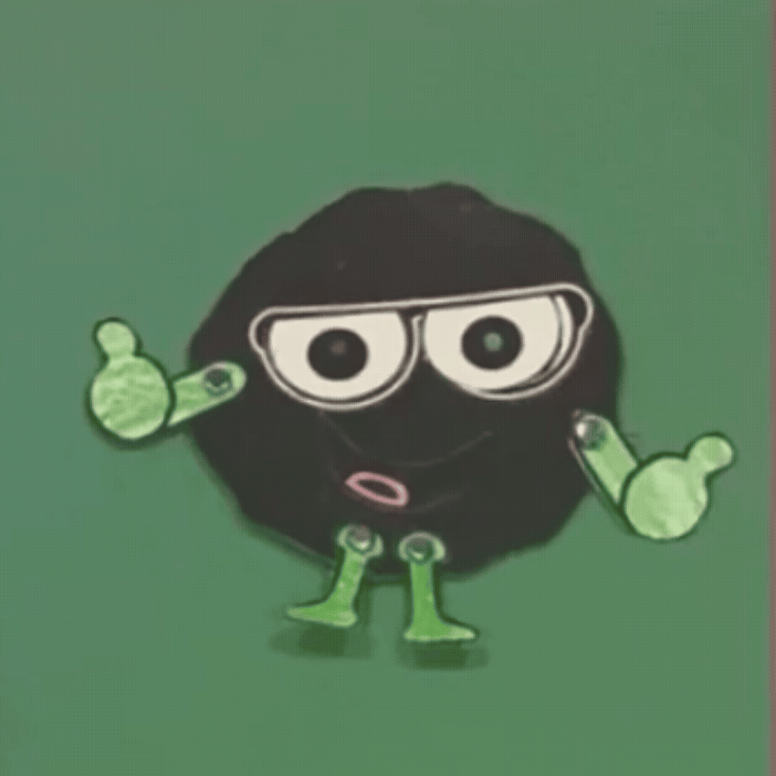
Turn the girls' ideas into a playful cookie-season video.
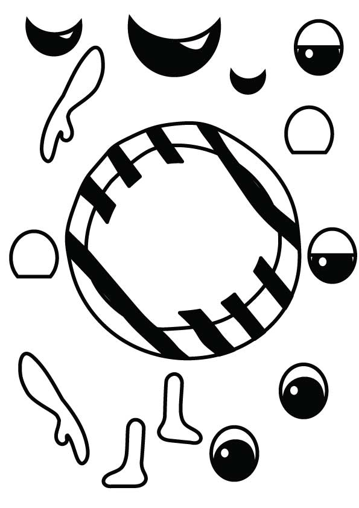
THE IDEA
I designed each cookie as a simple cartoon character, giving it a face, personality and recognizable visual details. The illustrations were then separated into pieces that could become physical puppets.
CHARACTER DEVELOPMENT
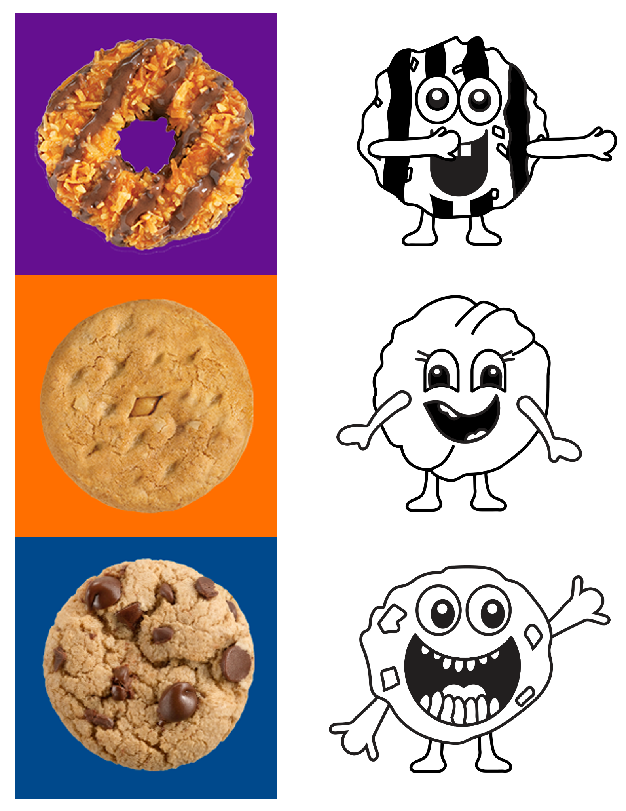
CHARACTER SET 01
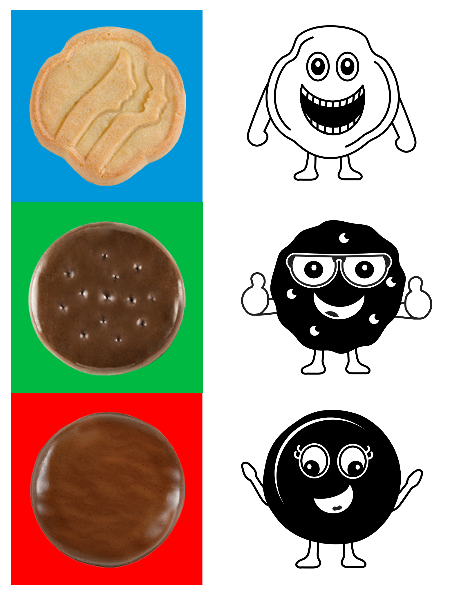
CHARACTER SET 02
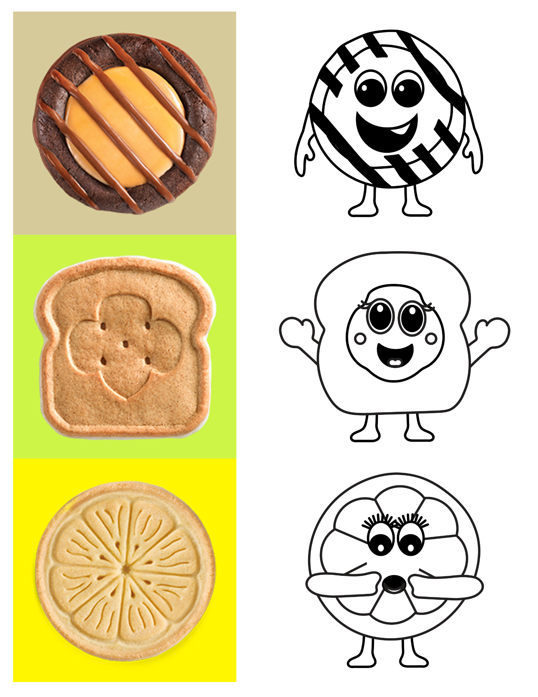
CHARACTER SET 03
THE WORKSHOP
The project became a creative workshop. Each girl could imagine a scenario, choose characters and help assemble the puppet pieces needed to make the scene.
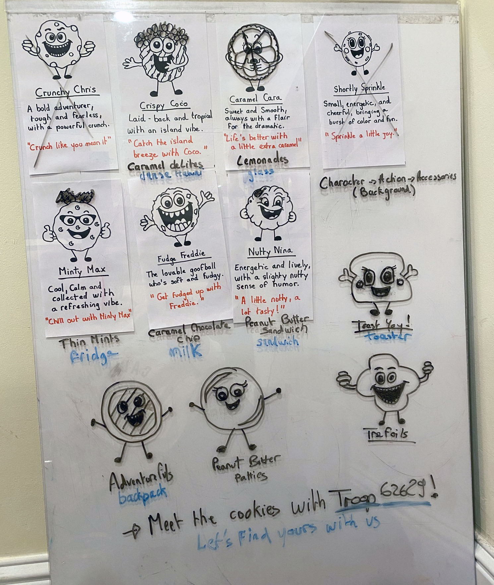
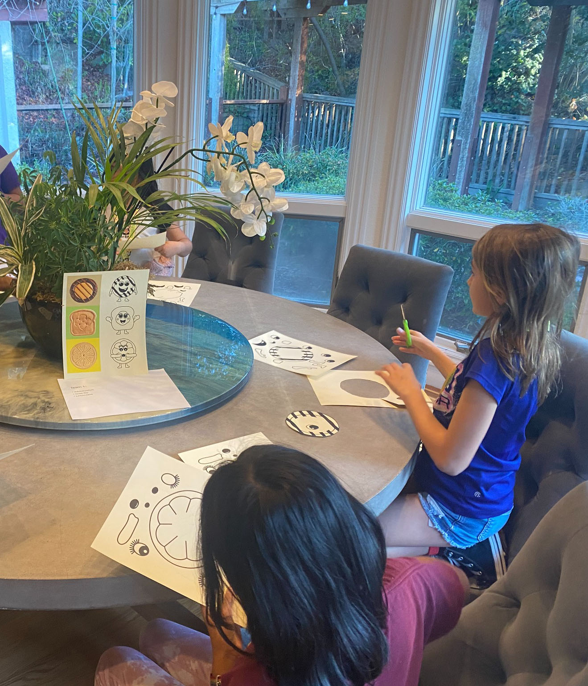
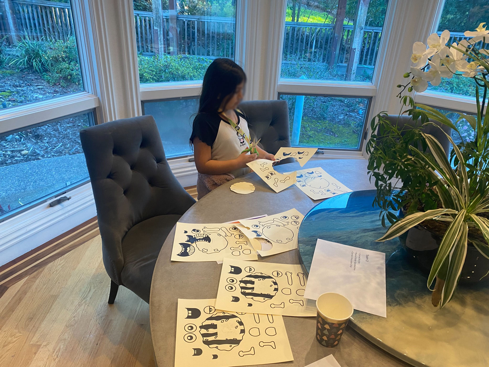
THE FINAL VIDEO
KEY BENEFIT
The strength of the concept was not only the final animation. It gave the girls a role in the creative process — imagining stories, making characters and seeing their ideas become part of the final piece.
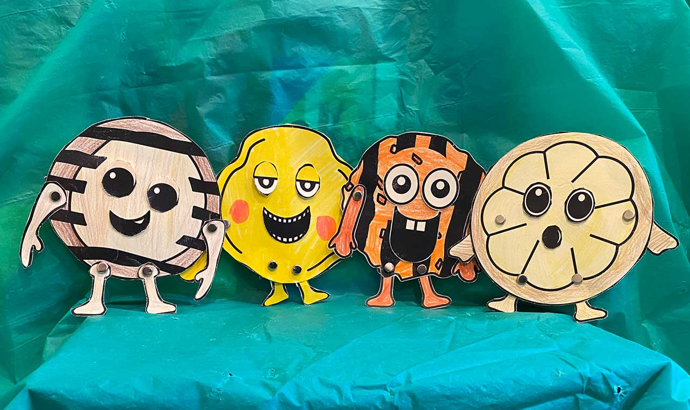